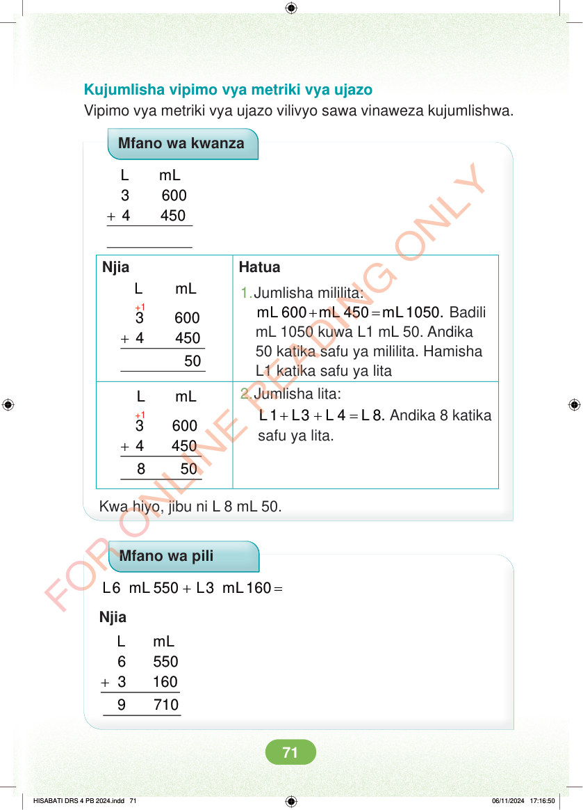

Kujumlisha vipimo vya metriki vya ujazo Vipimo vya metriki vya ujazo vilivyo sawa vinaweza kujumlishwa. Mfano wa kwanza + L mL 3 600 4 450 Njia Hatua +1 L mL + 3 600 4 450 1. Jumlisha mililita: + = mL 600 mL 450 mL 1050. Badili mL 1050 kuwa L1 mL 50. Andika 50 katika safu ya mililita. Hamisha L1 katika safu ya lita L mL +1 2. Jumlisha lita: + + = L 1 L3 L 4 L 8. Andika 8 katika safu ya lita. + 3 600 4 450 8 50 Kwa hiyo, jibu ni L 8 mL 50. Mfano wa pili + = L6 mL 550 L3 mL 160 Njia + L mL 6 550 3 160 9 710 HISABATI DRS 4 PB 2024.indd 71 HISABATI DRS 4 PB 2024.indd 71 06/11/2024 17:16:50 06/11/2024 17:16:50